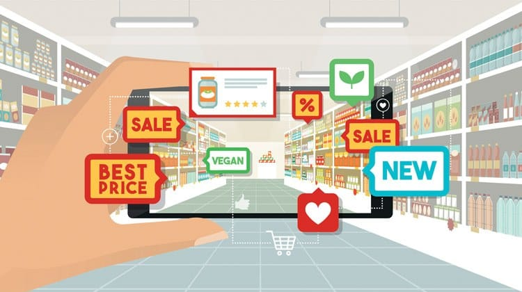
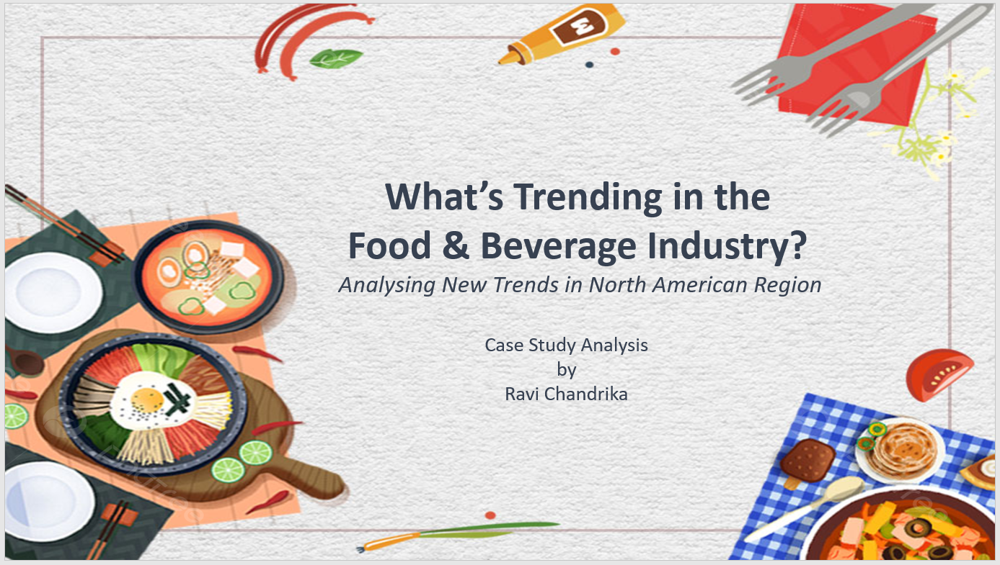
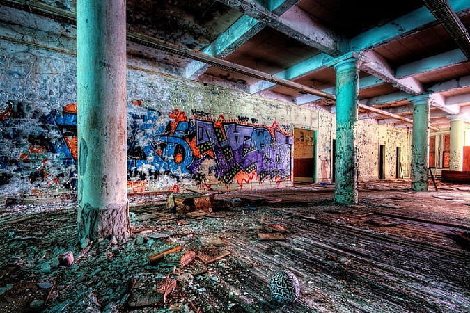
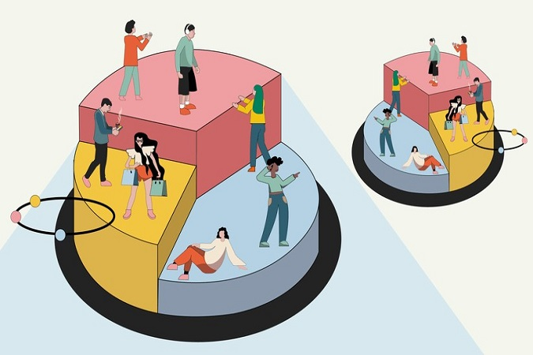

The project is about an imaginary retail giant called AtliQ Mart.
AtliQ Mart is a retail giant with over 50 supermarkets in the southern region of India. All their 50 stores ran a massive promotion during the Diwali 2023 and Sankranti 2024 (festive time in India) on their AtliQ branded products.
Through this exercise the sales director wants to understand which promotions did well and which did not so that they can make informed decisions for their next promotional period.

“Conducting a comprehensive evaluation of the North American food and beverage industry, analyzing market trends, emerging flavors, and consumer preferences to provide a holistic understanding of the regional F&B landscape.”
The goal of this assignment is to derive actionable insights, particularly focusing on the North America region, to assist stakeholders in making informed decisions regarding F&B product launches and flavor preferences.
In addition to this as a As the Brand Manager in the Consumer Packaged Goods (CPG) - Foods business, for any Market-category, determining whether to launch a new brand variant involves a strategic decision-making process.

For this project I focused on predicting whether a person is going to comply with a property maintenance fine or not and pay the given blight ticket.
The predictions are given as the probability that the corresponding blight ticket will be paid on time.
I have explored various regression techniques and finalised XBG based on AUC.

In this project, I performed an unsupervised clustering for Customer Segmentation.
I have finalized 4 clusters for the given dataset based on K-Means Clustering. Generated characteristics of each cluster such as demographic, purchasing habits and behavior.
Customer segmentation is the process of dividing customers into groups based on common characteristics.
Segmentation allows marketers to better tailor their marketing efforts to various audience subsets.
This is a virtual internship program with KMPG where I was able to work on client data, client looking to grow business by optiizing marketing stategy.
Analysing business data sets, improving data quality and suggesting recommendations to ensure quality of future data.
Creating customer segments based on RFM analysis, behaviour trends and patterns.
Creating visualizations and dashboards in tableau to derive insights from existing and new customers.